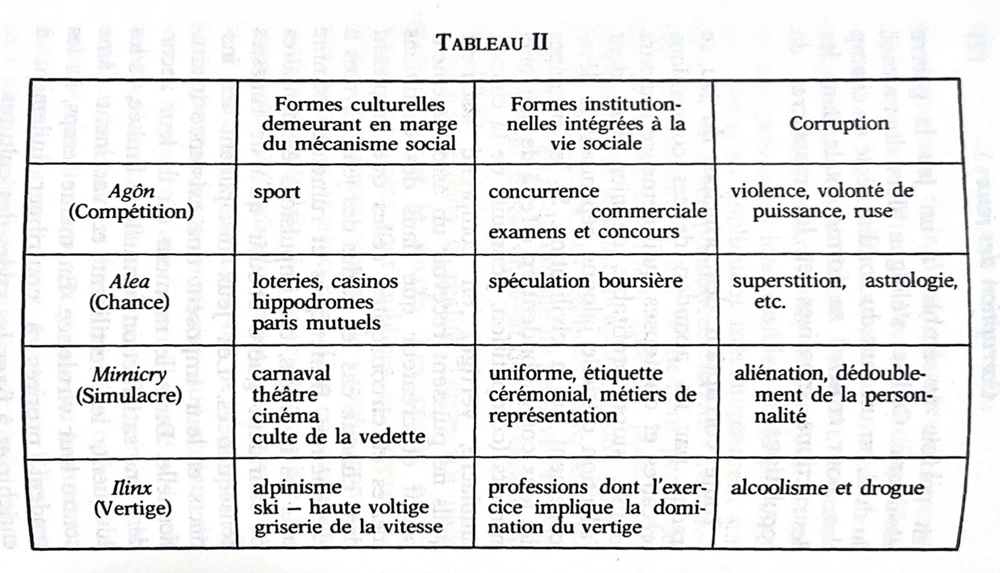
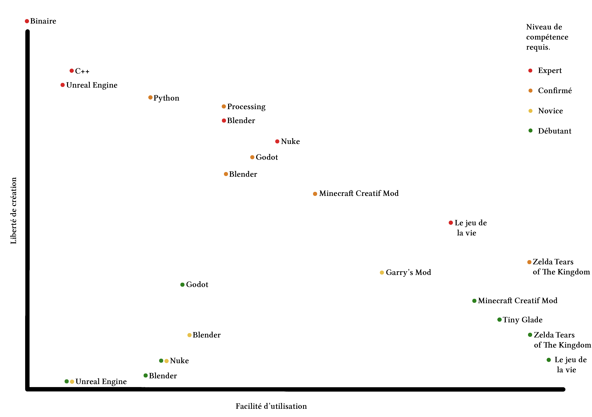

Le jeu vidéo a connu une expansion et une évolution effrénée dans les cinquante dernières années.
Ce médium a évolué drastiquement grâce au nouveau progrès dans le domaine de
l'informatique, à tel point que les possibilités qu’il offre n’ont plus rien à voir.
Il est passé de l'expérimentation de niche à l'un des éléments culturels de divertissement
majeur. Il est un élément de plus en plus présent dans la création numérique, car il offre
l’interactivité qui est une composante relativement rare dans le domaine de l'art.
Le jeu vidéo est vaste et regroupe une infinité d'expériences et d'utilisations uniques.
Mais le jeu vidéo, à force d’évolution, reste-t-il toujours un jeu?
Que sont ces jeux qui viennent franchir les barrières du ludique pour offrir des
interactions menant à la créativité?
La notion de jeu, y fait-elle toujours sens?
Certains jeux vidéo sont aujourd’hui considérés comme des jeux, mais possèdent
toutes les caractéristiques des logiciels de créations.
Et certains logiciels de création se saisissent des codes et des fonctionnements du jeu vidéo.
Certains jeux vidéo qui se rapprochent de l’outil de création numérique, seraient-ils
l’évolution de ces logiciels créatifs?
Comment catégoriser ces jeux qui n'ont pas de buts en dehors de la création?
Les concepteurs de ces jeux et les utilisateurs ont des statuts différents par
rapport au jeu, mais n'en restent pas moins liés.
Bien que cela donne lieu à des visions et des positionnements qui diffèrent.
Comment venir définir les limites des possibilités pour servir l’accessibilité et l’efficacité?
Les jeux vidéo, ne seraient-ils pas une simplification de l'utilisation des médiums de créations numériques?
Définition
La place du jeu dans la culture et ses origines
Qu'est-ce qu'un jeu vidéo? Cette question, qui peut nous paraître relativement simple, est
en réalité porteuse d'une longue réflexion.
Les jeux vidéo sont aujourd'hui omniprésents dans le quotidien de la plupart des sociétés modernes.
Bien que sa place diffère encore sur l'importance que ce dernier prend, il est rare de ne jamais
être confronté au jeu vidéo au cours de sa vie.
Il s'agit du passe-temps moderne qui a vu sa popularité croître de façon considérable, lorsqu'il
passa aux mains du grand public dans les années 70.
Depuis ce moment, il ne fait qu'innover et bousculer ses propres progrès d'année en année.
En 2022, on compte un peu moins de 1,8 milliard de joueurs dans le monde(1).
Le marché français a atteint un chiffre d'affaire de 6,1 milliards d'euros en 2023(2).
On se rend compte de la place que ce secteur peut prendre dans nos sociétés.
Bien sûr, d'un point de vue financier, les enjeux sont importants, mais le nombre de joueurs dans le
monde montre sa dominance grandissante dans les hobbies et passe-temps du quotidien.
Le jeu vidéo est vu, à ses débuts, comme une expérimentation et un jeu technologique.
Il s'agissait pour les étudiants d'un défi technique leur permettant d'explorer les possibilités de
l'ordinateur et d’également se former techniquement.
Une activité créative et ludique mixant technologie, expérimentation et mathématiques.
Bien qu'il fut dans un premier temps limité et développé au sein des milieux étudiants, le jeu vidéo s'est
progressivement ouvert à la société en devenant un élément culturel majeur de notre époque.
Dans cette ouverture, il vient bousculer le milieu culturel mondial en se posant aux côtés du cinéma ou de la littérature.
En l’espace d’à peine cinquante ans, le jeu vidéo, qui était auparavant relégué aux marges, s’est imposé comme
une composante centrale de notre culture.
Le regard que la société porte sur ce médium évolue en suivant les générations de joueurs qui ont grandi avec
ce dernier dans leurs quotidiens ou non.
La passion pour les jeux vidéo était plutôt rare parmi les personnes nées dans les années 1980 et 1990, ou moins
mise en avant, contrairement à la tendance actuelle.
Ce qui n'est plus le cas des nouvelles générations nées au début de ce siècle.
L’acceptation sociale se fait par la globalisation de ce hobby.
À première vue, les jeux vidéo semblent être une version moderne des jeux traditionnels, qui ont su intégrer des
technologies modernes.
Ces technologies sont celles de l'informatique et de l'image numérique.
Et c'est bien de cette façon que nous lui devons sa naissance.
Si l'on prend l'exemple du jeu Pong(3),
il s'agit d'une simulation d'un jeu de tennis.
Avec ses raquettes, ces deux opposants, et son filet central.
Cependant, les jeux vidéo émergent rapidement en tant qu’entité distincte, s’affranchissant
des conventions des jeux classiques.
On ne l'utilise plus pour moderniser un jeu existant, mais pour en créer de nouvelles expériences.
Il en perd le statut de sous-catégorie du jeu.
Pour définir le jeu vidéo, nous pouvons nous pencher sur sa définition que nous trouvons dans les dictionnaires.
Si l'on s'y réfère, on se rend compte que le mot « jeu-vidéo » figure en tant que sous-catégories du mot « jeu ».
Selon le Larousse(4), c'est deux mots distincts, tandis que LeRobert(5)
les considère comme un seul.
Il y a là, la rencontre de deux notions : celle du jeu et celle du support vidéo.
« - Mario : Socrate, ce n’est pas difficile à formuler, c’est un jeu avec de la vidéo,
sur un écran. » (6)
Cette phrase provient du prologue de son ouvrage intitulé « Philosophie des
Jeux vidéo » (7). Mathieu Triclot ouvre son propos sur une conversation fictive
entre Mario (8) et Platon. Ils essayent de définir ce qu’est un jeu vidéo. Ce qui
leur paraît simple devient très complexe par les contre-arguments de chacun. Ils
concluent sur :
« - Mario : Des expériences avec un air de famille? Voilà bien un critère extrêmement flou pour définir
les jeux vidéo. » (9)
Il vient par la suite donner des pistes de définitions tout au long de son ouvrage.
Mais il pose là, habilement, la complexité de sa définition.
Le jeu, la vidéo, l’interaction et leurs interconnexions
Commençons par essayer de définir ce qu’est un « jeu ». Dans son livre intitulé
« Les jeux et les hommes »(10),
Roger Caillois s’attaque à cette tâche ardue
qu’est celle de la définition d’un terme. Il y développe plusieurs familles de jeu.
Des catégories dans lesquelles viendraient se ranger toutes formes de jeux.

Tableau résumé des principes d’Âgon, d’Alea, de Mimicry et d’Ilinx.
Les jeux et les hommes, Roger Caillois, 1958.
Avec ce tableau et ces classifications Caillois cadre les différentes définitions
dans lesquelles tous les types de jeux peuvent se retrouver. Mais cette classification,
bien que pertinente de son contemporain, entretient une relation complexe
avec le jeu vidéo. La majorité des jeux rentrent et surpassent cette classification.
Le jeu est considéré par Caillois uniquement en tant qu’activité, comme quelque
chose qui est choisi par le joueur. Certains jeux qui ont pour but la création pure
ou les jeux orientés pour l’éducation donnent une expérience qui est autre.
Venant sortir des classifications de Caillois. Si l’on prend l’exemple du Game of
Life(11)de John Conway,
le jeu a amené des questions bien plus complexes qu’une
simple activité ludique. Il permet de comprendre des systèmes de survie et de
reproduction d’espèce. Ou bien même d’utiliser le principe d’envoi de paquet en
binaire afin de recréer le jeu dans le jeu. La contemplation des paysages et des
galaxies que l’on a créés au travers de Space Engine(12)
n’a rien d’un jeu en soi. On paramètre, puis on observe.
Jouer aux jeux vidéo peut aujourd’hui devenir un métier. On peut le faire par
l’entremise de l’eSport(13),
mais aussi en échangeant des objets gagné dans un jeu
contre une valeur monétaire. L’exemple de ce qui s’est passé dans le jeu vidéo
RuneScape(14).
À la suite de la crise économique au Venezuela en 2010, il était
devenu plus rentable de « farmer »(15)
des objets, dans le jeu vidéo RuneScape,
pour les revendre contre des dollars américains plutôt que de faire un travail
« commun ». Le jeu vidéo, c’est mêlé avec la frontière du travail. On parle parfois
de «Gameification » du monde professionnel. Il s’agit de rendre le travail ludique
ou bien de camoufler le travail en activité ludique. C’est pour ces raisons qu’il est
aujourd’hui compliqué de considérer que les jeux vidéo sont des « jeu » en toute circonstance.
Le jeu vidéo vient donc confirmer la classification de Caillois tout
en la rendant caduque. Comme le souligne Mathieu Triclot : « Autrement dit, des
jeux vidéo à partir du texte de Caillois, on doit dire à la fois qu’ils la débordent
en inventant de nouvelles combinaisons au sein de l’espace ludique. »(16).
Le jeu vidéo, lorsqu’il perd son statut de jeu, se détache de la simple modernisation du
jeu traditionnel.
La notion de « jeu » « vidéo » perd la moitié de son sens lorsqu’il n’est plus
un jeu. Perdre la moitié du sens de sa structure semble faire entrer certains jeux
vidéo dans d’autres catégories. Bien qu’ils perdent la moitié de leur composante
linguistique, il n’en devient pas pour autant l’autre partie. On ne peut pas les
qualifier de simples vidéos. Ce ne sont pas des films ou des images numériques
animées. Il y a là quelque chose de plus. Plus que le fait de jouer, on interagit avec
une machine informatique. C’est l’interaction qui semble pouvoir aider à définir
le genre. Sa présence paraît obligatoire. L’intervention humaine et l’impact en
temps réel que l’on peut avoir, aide à se plonger dans un jeu et à le différencier
d’une simple animation ou d’un film. Pourquoi ne pas appeler le jeu vidéo « vidéo
interactive »? Même s’il existe quelques contre-exemples comme le jeu Progress
Quest(17).
On crée un personnage avec quelques options simples, puis le jeu démarre.
À partir de ce moment, il n’est plus possible d’agir. Cela a été nommé un
« jeu à zéro joueur » qui a, d’ailleurs, donné par la suite le jeu Godville(18).
Dans ce jeu, on incarne un dieu qui supervise un héros dans sa quête, mais le jeu avance
tout seul, il n’y a besoin d’aucune interaction humaine. Le fait d’utiliser le terme
« jeu » pour expliquer renforce l’idée floue de la définition. Car, en soit, rien ne les
définit comme des « jeux » mais c’est tout de même comme cela que nous vient
l’idée de les nommer.
On peut également citer les jeux dits « God Game ». Le principe est relativement
similaire au jeu précédemment cité. Mais, dans ce cas, le statut de « Dieu » est au
centre du jeu et surtout pleinement assumé. C’est comme cela qu’est conçu le jeu
Populous(19).
Le joueur commence chaque niveau avec une petite tribu de fidèles
sur un monde. Le but est simple : rendre son peuple plus puissant que celui de la
divinité ennemie, puis l’exterminer. Le jeu ne propose pas de missions ou d’objectifs autres.
Il s’agit d’un terrain d’expérimentation où le joueur interagit avec
les éléments du monde et les fidèles pour influencer le cours des événements.
La principale mécanique de jeu est l’élévation et l’abaissement du terrain, un pouvoir
divin essentiel qui permet de remodeler le monde afin d’aider son peuple.
En nivelant les collines et les vallées, le joueur peut créer des terrains plats pour
permettre à ses fidèles de construire plus facilement des maisons et des colonies.
Plus les adeptes prospèrent, plus la puissance divine du joueur augmente,
lui permettant d’utiliser des pouvoirs. Le joueur a donc uniquement des interactions
non-directs avec ce qu’il se passe. Il vient créer des systèmes afin de gagner
de la puissance. Dans ce cas-là, il s’agit davantage d’une mise en place de système.
La notion est encore là trouble car, se basant là-dessus, une problématique
se porte à nous.
La mise en place de systèmes venant agir en conséquence peut-elle être un « jeu
vidéo »? Le « jeu » précédemment mentionné, « Game of Life », possède un statut
particularité. Bien qu’il porte le nom de « jeu » et qu’il soit expérimenté comme tel
par la plupart des gens, il a été fondé par un mathématicien et considéré comme
un problème mathématique. Le Jeu de la vie est un automate cellulaire. C’est-à-dire
qu’il est composé de cellules sur une grille régulière et évolue en fonction
de règles. Dans notre cas en fonction de la proximité ou non d’autres cellules. Il
s’agit d’une simulation qui explore comment des formes de vies simples peuvent
évoluer selon un ensemble de règles prédéfinies. Il se joue sur une grille infinie
composée de cellules carrées. Chaque cellule peut être soit « vivante » soit
« morte ». À chaque tour, ou « génération », les cellules changent d’état selon
trois règles. La survie, une cellule vivante avec deux ou trois voisines vivantes,
reste vivante à la génération suivante, reproduisant ainsi des conditions de stabilité.
Il y a la naissance, une cellule morte avec exactement trois voisines vivantes
devient vivante. Et enfin, la mort, une cellule vivante meurt si elle a moins de
deux voisines ou de plus de trois voisines. Il est étudié, testé, expérimenté, poussé
et découvert par de nombreux mathématiciens, amateurs, scientifiques et simple
curieux. Son étude et la mise en avant des trouvailles de nouveaux paternes sont
publiées et référencées comme des comptes-rendus scientifiques. La notion de
jeu se perd par l’image et le regard que les utilisateurs lui portent. Dans sa structure,
il n’est pas différent de tous ces jeux vidéo qui s’orientent vers la mise en
place de systèmes. On décide un ensemble de paramètres puis on observe ce qu’il
se passe. Ces jeux se retrouvent donc avec des définitions qui viennent différer
en fonction du regard et de l’utilisation qu’on en a.
Certains artistes ont créé des jeux sans interaction humaine. Dans son œuvre
« Emissaries »(20).
Ian Cheng simule trois évolutions cognitives. Le futur, le passé
et la condition écologique qui les façonnent. Ces simulations sont interconnectées.
La spécificité de ce projet provient de l’absence de joueur humain. Tout est
joué par une intelligence artificielle. Nous assistons donc à un spectacle d’une
suite de réalisation d’ensembles de paramètres. L’expérience du spectateur est
plus proche de celle du cinéma que du jeu vidéo. Mais l’essence même du projet
et sa conception rentrent dans la catégorie du jeu vidéo. Le jeu est conçu pour
un joueur, avec ses possibilités, ses objectifs et ses adversités. Simplement, ces
règles sont jouées par une intelligence artificielle pour laquelle la notion même
de jeu est complètement absconse. Ce projet correspond totalement à la notion
de jeu vidéo d’un point de vue de la réalisation technique, mais aucunement dans
l’expérience qu’il offre aux spectateurs. On parle d’ailleurs de spectateur et non
de joueur.
La notion de créativité
La créativité est une notion complexe qui est difficile, si ce n’est impossible à
définir. Mais sans pour autant vouloir lui donner une définition stricte, il est important
d’essayer de catégoriser les différentes formes de création. En soi lorsque
l’on fait n’importe quel choix venant modifier un élément quelconque, on crée.
Mais il me semble incongru de mettre dans le même panier la création d’une tenue
que l’on va porter le matin même et la réalisation d’un projet artistique. Bien
que les deux soient des activités créatives. On a dans un premier temps la création
que l’on pourrait appeler loisir créatif. C’est notamment le cas du modélisme. La
plupart des personnes pratiquant cette activée vont venir recréer quelque chose
de déjà existant. Dans le cas de la mise en place d’un train électrique et de son
décor, on va vouloir recréer une gare ou une ville sur un modèle existant. On
peindra des figurines de façon dite « réaliste ». Il y a souvent dans cette catégorie
de la création un lien aigu avec l’idée de la maîtrise technique. Il n’y a pas de recherche
d’un concept, mais la réalisation d’une technique, le dépassement d’une
difficulté ou de la représentation formelle d’un élément existant. Mais également
ce que l’on pourrait appeler du « tuning ». C’est-à-dire l’amélioration, la modification
ou l’ornementation de quelque chose. Lorsque je change la tapisserie de mon
appartement, je suis confronté à des choix créatifs, mais il n’y a pas de concept
derrière cela. Je suis donc dans ce cas là dans le « tuning ». Dans un second
temps, la création « libre » qui amène la question de concepts et de réflexion.
On ne crée pas simplement pour représenter quelque chose déjà existant. On avance
une idée. C’est un changement dans la réalisation, mais également dans l’utilisation
de ces créations. Si l’on prend l’exemple des jouets Lego(21),
ils offrent deux niveaux bien différents de créativité. Leurs systèmes de briques en plastique
permettent de venir réaliser une infinité de formes. La création se trouve dans la
capacité de réaliser des formes en ne se basant sur rien d’autre que l’inventivité
du joueur. C’est cet aspect de création libre qui a été le moteur principal de la
popularisation de ces jouets. Mais aujourd’hui, les jouets Lego se sont orientés
davantage vers une forme de puzzle. On a nos éléments et l’on doit reconstruire
un modèle que l’on connaît en suivant un plan défini. Il s’agit donc d’un exercice
de logique bien plus que de créativité. C’est en venant jouer avec ces différents
puzzles Lego et en inventant leurs propres histoires que les enfants retrouvent
leur créativité.
Sans y porter de jugement de valeur, ni essayer de définir pleinement ce
concept complexe, il est important d’être conscient de ces différentes échelles
de création. Notamment dans le cas du jeu vidéo. Car certains jeux vidéo qui
perdent la notion de « jeu » le font souvent pour offrir des possibilités de création libre.
La très grande majorité des jeux vidéo offre des choix créatifs qui sont
de l’ordre du « tuning » notamment par la personnalisation de son avatar.
Hors jeu et libertés
Si on reprend cette idée d’image numérique interactive, le jeu vidéo serait en
réalité qu’un ensemble d’interactions humaines venant modifier en temps réel
des images, des formes, des espaces numériques. Avec une telle définition, beaucoup de
choses qui ne répondent pas au titre de jeu vidéo viendraient correspondre
à ces caractéristiques.
La plupart des logiciels de créations d’images numériques peuvent rentrer dans
ces critères. L’interaction vient façonner de l’image. Que ce soient des logiciels de
dessins, de modélisation 3D, des moteurs de jeu vidéo ou des logiciels de musique
assistée par ordinateur. Bien qu’il nous semble dans un premier temps évident
qu’ils ne sont pas des jeux vidéo, cela devient beaucoup plus flou lorsqu’on essaye
de définir les caractéristiques qui leur interdisent ce statut.
Concevoir l’intérieur de sa maison dans les Sims(22) en ne se préoccupant que
de l’esthétique, sans que cela n’affecte le jeu, ne diffère en rien de la modélisation
en trois dimensions sur Blender(23) d’un point de vue conceptuel.
Fondamentalement, il peut s’agir de la même chose. Bien que l’un offre plus de possibilités. Dans
un logiciel de 3D, on a bien des outils avec lesquels on interagit, qui viennent
modifier ou créer une image numérique ou un espace. Il y a donc là toujours un
flou. Mais le problème peut être également pris dans l’autre sens. Ce n’est peut-être
pas des environnements de créations numériques qui viennent remplir les
critères du « jeu vidéo » mais bien certains jeux vidéo qui en sortent. Certaines
typologies de jeux viennent proposer au joueur, grâce à des outils, un environnement
où le joueur peut à sa guise, venir se consacrer à la création d’espaces,
de formes, d’images, de son, d’architectures, ou de personnages. Bien que cela
soit parfois un élément de gameplay permettant d’avancer dans le jeu, certain,
vont s’affranchir de cela pour donner à disposition un outil « sans but ». C’est par
exemple le cas du jeu Sim City(24). Il n’y a pas vraiment de buts particuliers, si ce
n’est l’optimisation de la création d’une ville. Comme le dit Jhon Seabrook dans
sa conférence(25) pour présenter le jeu de Will Wright : « Son jeu n’a pas de but
clair, pas de résultat, pas de règles, pas de personnage, aucune forme de violence
et aucun objectif de victoire clair, cela ne semble pas amusant. . . »(26). Mais cela a
donné un des jeux avec le plus de succès au monde. Et c’est là que se situe tout
le paradoxe de ses jeux qui viennent offrir des possibilités de créations en venant
s’affranchir des fondations de la notion de jeu. Bien qu’il existe des jeux de
ce type avant Sim City, comme The Sumerian Game(27) qui est par ailleurs un des
premiers jeux dit « jeu éducatif », c’est Sim City qui implante de façon marquante
ce type d’espace de création et d’interprétation libre. La question n’est plus pour
les développeurs : « Comment faire aimer mon gameplay, mes personnages et
mon histoire? » mais « Comment faire aimer mes systèmes et mes outils? ».
Ces jeux ont donné naissance à un type de jeu que l’on nomme bac à sable.
La métaphore est assez parlante. On aménage un espace de jeu en sable. On offre
des outils. Une pelle, de l’eau ou un seau. On laisse librement l’enfant construire
ce qu’il veut. Sauf qu’il s’agit là d’outils et d’espaces définis par le développeur.
Ces derniers viennent les mettre à la disposition du joueur.
On se rend compte de la difficulté qui peut se présenter à la question de la définition.
Le jeu vidéo est difficile à enfermer dans une case au vu de ses évolutions
et de ses ramifications toujours plus importantes. Et certaines de ces branches
viennent se mêler à d’autres. La notion de jeu se complexifie de plus en plus par
l’ambiguïté de sa notion même. Certaines expériences peuvent être considérées,
et perçues, comme du jeu. Dans d’autres cas, venir totalement sortir de ses définitions.
L’exemple du projet Emissary de Ian Cheng en est un bon exemple. Il
est clair que son travail n’a rien d’un jeu vidéo d’un point de vue philosophique
ainsi que la façon dont il est montré et expérimenté par les spectateurs. Mais il y
rentre complètement d’un point de vue du développeur.
Le Bac à sable et le Modding
Le bac à sable
La complexité de la définition du jeu vidéo découle en partie de l’existence
de ces jeux qui répondent à la catégorie des « jeux bac à sable ». Car ils viennent
apporter le flou dans son statut. Ils sortent du simple amusement ou divertissement.
Bien que toute expérience de vie offre dans la plupart du temps plus qu’un
moyen de passer du temps. Nous ne pouvons pas résumer la lecture de sciencefiction,
de polars, le visionnage de film ou l’expérience d’une partie de jeu de rôle
à une simple perte de temps embellie. Certaines de ces activités vont se centrer
davantage sur l’apport éducatif et créatif. Bien que cela ne les rend pas à coup
sûr plus efficaces, c’est là-dessus que leurs structures viennent s’articuler. Mais
il y a encore là une notion de proportion, certains se centrent totalement sur ces
notions éducatives et créatives, là où d’autres viennent les parsemer plus discrètement.
Le film documentaire sur la bataille de Pearl Harbor n’a pour objectif
rien d’autre que la mise en avant d’une connaissance vulgarisée. Là où le film
d’animation du Tombeau des Lucioles(28)
vient raconter une histoire fictive d’un drame.
Il met majoritairement l’accent sur l’aspect psychologique et le lien entre
un frère et sa sœur. Tout en nous faisant découvrir une esthétique, des couleurs
et de la musique propre aux artistes qui ont façonné cette animation. Mais dans
ce film, bien qu’il ne soit pas un documentaire historique, on en apprend sur
l’histoire du Japon et la vie civile lors de la Seconde Guerre mondiale. On a là
un exemple de divertissement porteur d’une notion autre. Qui, dans ce cas-là, est
éducative.
Les jeux vidéo de types bac à sable sont la mise en application même de ces
divertissements porteurs de plusieurs notions. À l’origine, ils découlent pour la
plupart d’un dérivé des jeux éducatifs. Les premiers bacs à sable à se placer sous
cette bannière sont Elite, SimCity ou la série des Tycoon. Ils viennent apporter de
nouvelles possibilités d’utilisation du jeu vidéo. Celui du jeu en tant qu’ouverture
sur la création. On retire le héros, on enlève la narration et on vient placer le
joueur dans un statut d’architecte. Je ne suis plus le héros d’un film interactif,
mais j’incarne un rôle presque divin afin de bâtir quelque chose. Des lieux, des
espaces, des systèmes. Cette transition est la porte ouverte à la complexification
du statut du jeu vidéo et l’origine de sa sortie partielle de la notion de « jeu ».
Mais cette ouverture n’est qu’un chemin reprenant celui déjà parcouru par les
jeux non-vidéo et les jouets. Lego a toujours utilisé cette image de jeu créatif
pour venir se faire une place dans l’industrie du jouet. On n’offre pas simplement
un jouet avec une fonction, mais un ensemble de pièces pouvant apporter une
liberté de créations. Une sorte d’offre créative. Car, dans ce cas, on ne vend pas
qu’un simple objet de distraction, mais un jouet qui « apprend la créativité ».
Cette mise en valeur est d’ailleurs, majoritairement, dans un but d’acceptation
pour les parents et non un argument pour les enfants qui possèdent déjà cette
capacité créative. Ils n’ont pas besoin qu’un jouet soit catégorisé comme éducatif
pour apprendre. Et le jeu vidéo bac à sable suit en quelque sorte le même schéma.
Tout comme pour les jouets, cela est beaucoup plus simple à faire accepter au
grand public non initié. On pourra entendre :
« Mon enfant ne fait pas que passer son temps sur The Sumerian Game. Il
apprend la gestion d’une ville. ».
« Mon enfant ne joue pas simplement aux échecs, il apprend la stratégie, il
affine sa réflexion et ses capacités d’analyses. ».
Bien que le jeu vidéo et le jouet ne se limitent pas aux enfants, le passage par
l’acceptation sociale est primordial pour le faire passer de la niche à un élément
culturel ayant sa place. Le passage au grand public permet également l’implication
de nouveaux acteurs. Ce qui permet une évolution toujours plus importante
du genre.
Le bac à sable est une notion relativement large qui englobe aujourd’hui de
nombreux jeux. L’idée centrale est toujours la même. Donner la possibilité au
joueur de venir créer quelque chose. Il met à disposition un outil de création
qui possède ses limites et possibilités. Il est bien souvent considéré comme une
recherche de la liberté dans le gameplay. Certains jeux sont vus comme des bacs
à sable par le grand public, bien qu’il n’en possède pas les caractéristiques. Il
y a souvent méprise quant à ce qui constitue un jeu de sable. Afin d’avoir l’idée
globale que les gens se font de cette catégorie de jeu, je demande à ChatGPT(29)
de la définir. ChatGPT possède ici cette capacité de faire une moyenne de la pensée
qui existe sur un sujet. Voilà ce qui en ressort :
« Un jeu vidéo bac à sable (ou sandbox) est un type de jeu offrant au joueur une
liberté d’action quasi totale, dans un monde ouvert ou un environnement largement
interactif, où il peut explorer, créer, et modifier les éléments du jeu sans être contraint
par des objectifs prédéfinis ou une progression linéaire. »(30)
Cette courte définition ressort l’idée globale de la recherche du jeu bac à sable,
mais une notion fait pour moi défaut d’utilisation ou d’interprétation. C’est la
notion de « liberté d’action presque absolue. ». Bien que ce soit une idée toujours
mise en avant par les développeurs. En effet, la liberté est la notion que
l’on veut faire ressentir au joueur. Mais ce qui permet de créer un jeu aussi libre,
c’est la mise en place astucieuse de limites et de contraintes par les développeurs.
En effet, on retire la plupart du temps les objectifs préétablis ainsi que
la narration standard. Mais on ne vient pas retirer les contraintes pour autant.
Bien au contraire, car c’est grâce à ces dernières que le jeu peut se définir. Si l’on
extrapole, un jeu avec l’absence totale de cadre existe. Il s’agit des langages de
programmation. Cela n’est pas entièrement vrai, car ils ont aussi leurs limites. Il
ne se compose que d’une structure et d’une simplification du binaire. Le binaire
possède lui-même les contraintes qui offrent les possibilités physiques de nos
ordinateurs. Bien qu’il s’agisse là d’une exagération, l’idée en est la même. Définir
habilement les limites et les contraintes pour offrir une liberté. Si l’on prend
l’exemple de SimCity, bien que le jeu nous semble libre par ses possibilités et ses
absences de but. Le jeu nous offre un outil de construction urbain. On s’affranchit
de nombreuses contraintes. Il n’y a pas besoin de gérer les conditions ouvrières
des bâtisseurs, l’acheminement des ressources, les conditions géopolitiques... Etc.
Dans le jeu Minecraft(31)
nous sommes libres de venir construire toute forme de
structures avec les matériaux que nous offre le jeu. Mais c’est bien sa contrainte
principale qui a fait de connaître Minecraft. L’idée que tout soit dans une structure
de cube de même taille. On limite toute structure à de l’assemblage de cubes
de format identique. Cette limite formelle permet la mise en place simple de plus
grande structure. Elle vient offrir une identité au jeu. Une caractéristique majeure
venant être l’essence de ce jeu. Les cubes permettent quelque chose de très important
dans ce jeu, l’accessibilité. L’absence de complexité n’est pas synonyme
de frein à la créativité et aux possibilités. Ces restrictions viennent donner une
accessibilité permettant l’efficacité. On ne se pose pas la question des dimensions,
on se moque de la gravité et des notions de poids. Si l’on fait un parallèle avec le
dessin, l’accessibilité, c’est limité le support à une feuille blanche et l’utilisation
d’un crayon à papier. Cela limite certes les possibilités, mais il est beaucoup plus
facile d’obtenir des dessins efficaces que de demander la fabrication complète du
support et de ses outils de traçage.
Râteau, eau, seau. Contrôle, espace, outil
La mise en place des limites et des outils du bac à sable est un exercice complexe.
La structure du jeu repose sur ces limites. Le développeur doit donc jouer
sur la construction des restrictions permettant de réaliser un espace et un outil de
création libre. Tout en définissant le niveau d’accessibilité. Concevoir un jeu de
type bac à sable, c’est façonner un ensemble qui donne la capacité de créer, de détruire,
d’explorer sans contraintes. De bâtir, de modeler simplement des éléments
complexes. Mais pour fonder un tel environnement, il ne suffit pas de laisser libre
cours au chaos. La régulation des possibilités et sa structuration permettent l’utilisation
de cette liberté. Un jeu bac à sable ne se construit pas en dictant, mais en
offrant des possibilités d’actions que le joueur est libre d’exploiter ou non.
City Skyline est un jeu considéré comme bac à sable dans lequel on vient
créer des infrastructures urbaines. Bien qu’il existe un but consistant à venir optimiser
les villes que l’on fonde. La construction, le déplacement, l’orientation
des bâtiments que l’on crée est simple à faire. Il suffit de glisser-déposer avec sa
souris pour venir placer un immeuble vingt étages. En quelques actions simples,
on se retrouve avec un quartier et des axes routiers bâti. Que l’on peut modifier
ou détruire tout aussi facilement. L’accessibilité est très poussée dans ce jeu. On
limite au maximum la complexité de mise en place de bâtiment en passant par
une limitation calculée des possibilités de placement pour pouvoir concentrer le
joueur sur la fabrication d’une ville entière. Bien qu’il existe dans City Skyline
des objectifs et des contraintes, de nombreux joueurs s’en affranchissent afin de
se concentrer uniquement sur la planification et l’optimisation urbaines. La gestion
du chaos se fait par la structure même du jeu. On ne peut rien y faire d’autre
que de bâtir des infrastructures. Par exemple, on ne peut pas se déplacer dans la
ville en incarnant un personnage qui déambulerait dans les rues de notre ville.
Ou, en tout cas, pas avec les possibilités de base offertes par le jeu. Ces limites
ont été définies par les développeurs. Par choix ou par simplicité.
L’une des portes ouvertes et bien souvent centrales au bac à sable est la structuration
d’environnements qui permet d’accompagner les systèmes qui composent le jeu.
Que ce soit en créant un monde vaste permettant la multiplication
d’interactions ou bien des mondes qui sont construits et prolongés par le joueur.
L’angle d’attaque peut différer en fonction de ce que l’on souhaite mettre à disposition
du joueur. Certains jeux optent pour la mise en place d’un monde déjà
structuré dans lequel on va venir placer de nombreuses interactions possibles
dans chaque recoin de la carte. Ce qui simule une sensation de liberté par les
nombreuses interactions offertes. Le monde semble vivant et tout nous semble
possible. Le joueur ne ressent pas le besoin de commencer à un endroit précis.
Dans le jeu Red Dead Redemption 2(32), on est mis
dans un monde ouvert dans lequel tout nous semble interagir et vivre. Il devient possible de
simplement se perdre au gré des différentes interactions qui se présentent un peu partout dans
ce vaste monde du FarWest. Mais l’espace offert au joueur ne doit pas nécessairement
passer par sa grandeur ou ses interactions qui tendent vers l’infini. Les
espaces restreints de Tiny Glade(33) en
sont un parfait exemple. Dans ce jeu, il n’est
pas question d’histoire, de but ou de contrainte. Ce jeu nous met à disposition
des outils simples d’utilisation permettant de fonder dans un style cartoon des
bâtiments, des châteaux ou des villages médiévaux. L’espace offert est en soi intrinsèquement
très restreint. On ne s’y perd pas. Bien au contraire, cela permet
de s’y retrouver facilement et de faciliter l’utilisation. Il n’est pas question ici de
faire vivre ce monde afin d’essayer de perdre le joueur. Mais de lui proposer un
espace facilement malléable. Il existe une combinaison de ces deux. C’est notamment
le cas dans l’exemple déjà évoqué de Minecraft. Le monde de Minecraft est
généré procéduralement. Il est donc théoriquement infini en ce qui concerne la
dimension. Son système de cube lui permet d’être interactif sur tout point de la
carte. Chaque partie du monde devient un espace de jeu et de création potentiel.
Mais contrairement à Red Dead Redemption il n’y a aucune richesse dans les interactions.
Dans un sens où il n’y a pas de variété. Les interactions sont toujours
les mêmes n’importe où. L’espace mis à disposition pour le joueur peut donc
prendre différentes formes. Et cela sert d’espace de construction. La communication
entre ces espaces et les outils permettant de s’en servir devient l’interaction
venant définir l’essence du jeu que l’on décide de créer.
Les jeux bac à sable se caractérisent non par des règles immuables, mais par
des systèmes souples et ouverts. Il faut penser les systèmes venant interagir entre
eux. Comme ces jeux ne reposent pas, la majorité du temps, sur de la narration ou
un gameplay rigide, ce sont les systèmes qui sont centraux. Le joueur n’incarne
pas un héros en particulier. Il ne réagit pas au jeu, il vient le créer. C’est bien souvent
par des ensembles simples de mise en place de système d’outil que vient se
former une multitude de possibilités créatives. La création d’éditeurs permettant
de modifier simplement un aspect du jeu. C’est ce qu’a mis en place Will Wright
dans son jeu Spore(34).
Dans ce jeu, on expérimente l’évolution d’une espèce vivante
que l’on vient incarner et modifier comme on le souhaite. On passe du
stade de cellule jusqu’à la conquête spatiale. En passant par toutes les étapes du
développement d’une espèce vivante. Mais ce qui est remarquable lors de sa sortie,
c’est son éditeur permettant de personnaliser la créature que l’on souhaite
incarner. Il s’agit d’une simplification d’outil de modélisation 3D permettant à
n’importe qui de venir créer son espèce comme il le désire. Et c’est là un exemple
fort de mise en place d’un système. Des outils simplifiés venant interagir tous ensemble
afin d’offrir une accessibilité à la création. Un autre exemple parlant est
celui du système d’ingénierie dans Zelda Tears of the Kingdom(35).
Un système de création mécanique a été implanté. Cela permet au joueur de venir construire
des véhicules, des machines, des plateformes... Etc. Leur utilisation est soumise à
des règles physiques définies par le jeu. Mais, une fois cela compris, le joueur est
libre d’utiliser ces créations comme bon lui semble. Ce qui permet une infinité de
solutions aux différents évènements du jeu. On peut s’en servir, comme cela a été
pensé, pour venir progresser dans l’histoire. Ou alors simplement, voire cet outil
comme un espace d’expérimentation mécanique que l’on vient toujours repousser.
Un objet va être détourné par les joueurs pour venir réaliser des machines
toujours plus complexes. Un chaudron de cuisine a permis au joueur de fabriquer
des systèmes de suspension et de souplesse. Beaucoup de joueurs se consacrent
davantage à la création de machines avec ce système plutôt qu’au jeu lui-même.
Les possibilités d’un système dépassent bien souvent ses concepteurs. Bien que
ce soit eux qui les mettent en place, leurs utilisations massives par des milliers de
joueurs permettent la découverte de nouvelles possibilités. Cela échappe toujours
au développeur, mais c’est une étape inévitable de ce type de jeu. Il est difficile
d’imaginer que les concepteurs de Minecraft se doutaient qu’un jour des joueurs
s’amuseraient à recréer notre planète. Super Mario Maker(36)
est un exemple intéressant, car il permet la créativité tout en l’encadrant de façon stricte.
Ce jeu fait partie de cette catégorie que l’on appelle éditeur de niveau. On a là un jeu dans
lequel on donne les éléments de base aux joueurs pour qu’ils viennent construire
eux-même une infinité de niveaux. On est donc à la fois extrêmement libre de
faire ce que l’on veut en termes de mise en place de niveau, mais tout en restant
dans des limites très strictes de ce qu’est un niveau d’un jeu Mario. La place des
développeurs est particulière. Ils donnent des éléments pour que la communauté
des joueurs fasse le jeu. Avec ce procédé, on vient utiliser ce qui est à la base la
tache des développeurs pour en faire l’élément de gameplay central. Mais cela
permet une expansion inatteignable pour une équipe de développeurs. La communauté
de joueurs étant toujours plus importante et efficace qu’une équipe de
développeurs à cause de leur nombre.
La tâche du créateur de jeu est de rendre ces systèmes accessibles et réactifs,
pour qu’ils nourrissent les possibilités de création et de modulation. La quête du
développeur est de faire aimer un ensemble de systèmes. Cette notion de système
est d’ailleurs pour moi une des caractéristiques principales pour pouvoir définir
et savoir si un jeu peut venir correspondre à cette dénomination. Car bien souvent,
certains jeux sont rangés dans cette catégorie bien qu’ils n’en fassent pas
réellement partie à mon sens. C’est le cas pour ces jeux qui n’offrent pas de possibilité
de création. Bien qu’il soit libre dans son exploration et dans la façon dont
on peut l’appréhender, rien n’offre au joueur la modélisation d’outil permettant
de « jouer » différemment. Il n’y a pas d’univers créatif en ce sens. On n’invente
pas pour résoudre. On résout en choisissant une suite de chemins plus ou moins
complexe, mais prédéfini. C’est le cas de la série des Grand Theft Auto(37)
ou de Cyberpunk 2077(38).
Ces jeux sont bien souvent positionnés sous la bannière du
bac à sable. Mais ils n’offrent pas la mise en place de système permettant de les
classifier ainsi. Ils sont uniquement des jeux à monde ouvert. Bien qu’ils proposent
énormément de liberté dans les manières dont ils offrent au joueur de se
confronter aux événements et à la narration, il n’y pas de créations. La notion
unique de joueur y fait là bien plus sens que dans les jeux bac à sable. Car on joue
une suite de chemins et de passages d’un immense labyrinthe. On nous donne
un sentiment de choix sur l’orientation, mais tous les chemins arrivent à une ou
plusieurs issues prédéfinies. S’il s’agissait d’un bac à sable, plutôt que trouver
l’issue du chemin, je pourrais prendre mes ciseaux et transformer l’espace en
jardin à l’anglaise. Je ne suis plus le décisionnaire d’un ensemble de choix déjà
pensé ; mais je deviens le concepteur de ces choix. La mise en place de ces choix
devient bien souvent le jeu en soi. Je passe de « joueur » à « créateur » de ce que
je souhaite considérer comme « jeu ».
Mais si ces jeux sont bien souvent mis dans cette catégorie, ce n’est pas pour
rien. Car, bien qu’ils ne l’offrent pas dans leurs possibilités de base, ils n’en restent
pas moins des supports parfaits pour l’implémentation du « Modding ». Ce terme
est un anglicisme. Il pourrait être traduit par « modifier ou modification ». Mais ce
terme est uniquement utilisé dans sa version anglaise. Il ne fait pas sens d’utiliser
sa traduction.
Modifier et modeler
Jusqu’à présent, les jeux évoqués et leurs possibilités de création se limitent
au système mis au point par les développeurs. Le joueur n’utilise que ce qui a été
prévu. Les éléments de base ne changent pas et les structures qui composent le
jeu restent toujours les mêmes. Il y a dans l’écosystème du jeu vidéo un pilier majeur.
Un élément qui est à l’origine de la plupart des jeux les plus populaires mais
également ce qui permet à certains de perdurer. Jusqu’à devenir l’aspect principal
de certains jeu. Il s’agit d’un concept répondant au nom de « Modding ».
Le modding, dans le domaine du jeu vidéo, désigne la pratique par laquelle des
joueurs modifient un jeu existant pour y intégrer leurs propres contenus, fonctionnalités,
et règles. Cela est fait par des joueurs pratiquant la programmation de
façon professionnelle, mais également par des amateurs passionnés. Le modding
peut prendre de nombreuses formes. Ajouter des personnages, créer de nouvelles
cartes, ajuster des mécaniques de jeu ou encore des refontes graphiques complètes.
Il constitue également une ouverture vers des mondes alternatifs, portés
par des communautés souvent dévouées et inventives, qui prolongent la vie des
jeux bien au-delà de leur cycle commercial standard. Cela est poussé par un désir
d’une culture du détournement. Bien au-delà d’une simple personnalisation, le
modding est un acte de création, une manière pour les joueurs de s’approprier
l’œuvre initiale et d’en étendre ses limites. Les moddeurs passent au statut d’architectes
en venant bâtir de nouveaux horizons.
Pour donner un exemple de ce qu’est le modding dans son principe, nous
pouvons reprendre l’exemple des jouets Lego. Le modding, c’est lorsqu’un enfant
va utiliser des éléments extérieurs ne faisant pas partie des jouets Lego pour venir
étendre son univers de jeu. L’enfant peut décider, par exemple d’utiliser des Lego
pour les personnages et les véhicules, mais viendra se saisir de ses Kapla(39)
pour fonder les bâtiments. On a là le concept du mode. On se base sur une structure
de jeu déjà existante et on n’en change pas sa nature ; mais on vient y changer
quelques règles de base afin de le rendre plus permissif. Le projet réalisait par le
F.A.T Lab(40)
et le Sy-Lab(41)
nommé « The free universal construction kit » reprend
cette notion de modding. Ce projet a pour objectif de venir imprimer des pièces en
3D permettant de venir assembler plusieurs jouets de construction. Ces modules
permettent de ne pas se limiter à une seule marque de jouet. Comme l’évoquent
les concepteurs : « Nos enfants le font déjà ! Et quand nous avons grandi, nous
l’avons fait aussi ou nous avons dû moins essayer(42) ».
Le modding est un aspect très important du jeu vidéo. Certains jeux sont aujourd’hui
connus majoritairement pour la quantité de mods existants. Rendant
presque toujours unique l’expérience qu’un jeu peut nous offrir. Il n’y qu’à voir
la quantité de mods disponible sur la plus grande plateforme de partage de ces
derniers. Skyrim(43)
possède à ce jour, sur la plateforme Nexusmode(44), environ
85 000 mods disponibles pour un total de 5,7 milliards de téléchargements. Certains
mods viennent parfois être intégrés directement au jeu d’origine lorsque
certaines fonctionnalités semblent indissociables.
Si l’on regarde l’origine des jeux les plus joués actuellement, ils ont tous un
lien fort avec le modding. League of legends(45),
Counter Strike(46)
et Fortnite(47)
sont dans leurs origines des mods qui ont évolué pour en devenir un jeu à part
entière. League of Legends est une reprise du style de jeu MOBA. Le MOBA est
le nom donné au jeu reprenant l’idée du mode « DotA » (Defense of the Ancient)
apparue dans le jeu Warcraft 3(48).
Il vient détourner les possibilités du jeu d’origine
pour venir concevoir quelque chose de nouveau. À la suite de la popularité
du nouveau mode de jeu, le studio Valve décida de réaliser un jeu unique se basant
dessus, qu’il nomma en utilisant le même nom DotA 2(49).
League of legends a par la suite repris ces principes pour venir créer son propre jeu.
Counter Strike provient lui d’un mode du jeu Half-Life(50).
Valve a racheté les droits
afin d’en faire une des séries de jeu vidéo les plus populaires. Fortnite ne déroge
pas à la règle. Le jeu a pour objectif de se battre contre des vagues de monstre
avec des coéquipiers. Mais rapidement après sa sortie suite au succès des jeux du
style « battle royale »(51)
; Epic Game décide de sortir un mod de jeu qui reprend
le style en utilisant les mécaniques de construction déjà présentes dans le jeu
d’origine. Son succès mondial a par la suite fait basculer ce jeu au rang de révolution
majeure de l’industrie du jeu vidéo. Il est intéressant de noter que l’idée
du battle royale est apparut dans le jeu vidéo également au travers de mods de
jeu. Notamment dans ARMA 2(52),
puis dans Minecraft grâce à des serveurs communautaire.
Lorsqu’un obtient une autonomie en devenant un jeu à lui seul, on
utilise le terme anglais de « Standalone ». Ce terme ne se limite pas seulement
au jeu vidéo.
Mais le modding n’offre pas forcément toujours un statut d’indépendance à
un jeu. Une multitude de jeux deviennent des supports à mods. Le jeu d’origine
reste le même, mais il devient rapidement indissociable des nombreux mods qui
lui sont apportés. Une typologie de jeux est propice au développement de mods.
C’est bien souvent le cas des jeux à monde ouvert. Car leurs flexibilités offrent
aux moddeurs un environnement vaste de création et de possibilité d’ajouts. C’est
notamment le cas de plusieurs jeux déjà évoqué comme Grand Theft Auto, Cyberpunk 2077,
Skyrim ou Minecraft. Grâce à leur gameplay centré sur la libre
exploration et la mise en avant d’une grande liberté, ces jeux sont le terrain de
jeu parfait pour les moddeurs. Il offre les éléments de base propice à la création.
Les moddeurs n’ont pas à se soucier des questions les plus complexes. On ne vient
pas refaire un jeu, mais recomposer avec une structure déjà solide. C’est un peu
comme venir ajouter de l’ameublement dans une pièce déjà conçue. Certains studios
de jeu ont rapidement compris l’importance et la force que pouvait constituer
un jeu qui se centrerait sur les créations des joueurs. Il n’y a donc pas besoin
de réaliser totalement un jeu. Il suffit de venir concevoir une base solide permettant
la création de mods. En rendant cela le plus accessible possible. Cela permet
aux studios d’avoir une main-d’œuvre « gratuite ». Bien que ce terme ne soit pas
le bon à mon sens, il est une réalité. Les mods sont généralement réalisés par des
personnes passionnées qui y consacrent plusieurs centaines, voire plusieurs milliers,
d’heures. Cela est fait bénévolement. Bien que certains trouvent aujourd’hui
des sources externes de revenu grâce majoritairement aux dons, cela reste des exceptions
parmi une foule de moddeurs. Les studios peuvent essayer comme ils
peuvent, mais une communauté active sera toujours plus efficace qu’une entreprise
seule. Garry’s Mod(53)
est à l’origine un mode du jeu Half-Life 2(54).
Il utilisait le moteur Source(55)
pour permettre aux joueurs de manipuler et de créer librement
des objets dans un espace sans contraintes. Ce mode a été conçu pour expérimenter
des fonctionnalités de physique et de manipulation d’objets, permettant
aux joueurs de construire, d’interagir et de simuler toutes sortes de situations. Le
jeu propose aux utilisateurs des outils permettant de placer des personnages, de
construire des structures, de créer des véhicules, ou encore de jouer avec les lois
de la physique en attachant des objets avec des câbles, des roues, ou des ressorts.
Les joueurs peuvent également programmer des mécanismes complexes,
ouvrir le jeu à des scripts et créer leurs propres mods de jeu. On voit rapidement
apparaître du roleplay, des battles royales ou des puzzles. En 2006, Garry’s
Mod devient un jeu indépendant distribué via la plateforme Steam(56).
Il rencontre un succès massif grâce à ses possibilités quasi-infinies et à une communauté de
moddeurs importante. Garry’s Mod incarne aujourd’hui un espace créatif pour
ses utilisateurs, que ce soit les moddeurs ou les joueurs. On peut également citer
Roblox(57).
Tout comme Garry’s Mod, il s’agit d’une plateforme de création de
mod. C’est l’environnement complet qui permet à ses utilisateurs de concevoir
leurs propres jeux et expériences en utilisant Roblox Studio, un moteur de développement
intégré. Basée sur la programmation avec le langage Lua, Roblox
offre aux créateurs de tout niveau la possibilité de concevoir des mondes. Grâce
à une économie virtuelle interne, les créateurs peuvent même monétiser leurs
jeux grâce à la monnaie du jeu, le « Robux », transformant ainsi la plateforme en
un écosystème. La mise en place d’une économie interne permet de faire passer
les concepteurs de mod à une forme de professionnalisme. L’esthétique des personnages
est un mix entre celle des jouets Lego et Playmobil(58).
Ces « jeux » ont la particularité d’être pratiquement des moteurs de jeu vidéo plus que des jeux
en soit. On peut même s’interroger sur l’appellation « mod », car, par définition,
le modding consiste à modifier un élément du jeu (gameplay ou visuel). Dans le
cas de ces jeux, il n’y a pas de modification ni d’ajout à un élément de base, car
celui-ci n’existe pas. Il s’agit donc de création et non de modification.
Les développeurs d’un jeu de ce type ne réfléchissent pas en tant que concepteurs de
jeu, mais en tant que créateurs d’un logiciel de création de jeu simplifié.
Ils offrent un outil. Cela se rapproche de l’idée que les jeux vidéo bac à sable sont
des systèmes mis à disposition plus que des jeux. S’il est possible de venir modifier n’importe
quel jeu comme on le souhaite, le modding offre-t-il le statut de
bac à sable à l’ensemble des jeux vidéo? Bien que cela puisse être le cas, il y a
tout de même certains éléments pouvant contredire cela. Comme évoqué précédemment,
le modding repose sur un principe de modification d’un élément fini.
Une extension de structure complète. Dans son fondement, on n’utilise pas le
modding en tant qu’outil de création, mais comme moyen d’extension. Le mode
est une suite. Comme une histoire parallèle dans un univers déjà écrit. La position des
concepteurs est également importante à prendre en compte. Dans le
cas du bac à sable, il s’agit de développeur venant penser et offrir des systèmes
et des outils permettant la création libre. Le jeu en soi devient l’outil. Offrir la
création est l’objectif même du jeu. Dans le cas du modding cela n’est pas le cas.
Il y a un objectif défini par le jeu qui ne centre pas forcément sur la création. Le
jeu fonctionne en autonomie. Il n’est pas pensé uniquement pour être modifié
originalement. Bien que cela soit de plus en plus pris en compte par certains studios.
La place des personnes faisant les mods est également différente. Il s’agit
non pas de concepteurs de jeu, mais de joueurs voulant apporter quelque chose
à leurs jeux. Cela est primordial pour saisir la portée du modding. Car on est là
face à des personnes voulant rendre un jeu qu’ils affectionnent meilleurs, en leurs
sens. C’est pour cela que, bien que cela soit techniquement possible, les mods ne
sortent pas des racines même du jeu. On pourrait techniquement intégrer des légionnaires
romains dans Cyberpunk 2077, mais personne ne le fait, car ce serait
incohérent avec l’identité du jeu. Les mods sont pensés par des joueurs pour des
joueurs. Le modding n’a pas pour objectif d’offrir de la créativité. Les seuls cas
contraires à cela sont les mods pour les jeux bacs à sable d’origine. On vient faire
un mod permettant d’ajouter des outils élargissant les possibilités créatives du
système déjà en place.
Le modding s’impose comme un acte fondamental de la vie des jeux vidéo,
bouleversant les frontières entre développeurs et joueurs. Contrairement aux
jeux où les mécaniques sont figées, le modding permet aux joueurs de modifier
la structure, et de l’étendre pour le réinventer. Dans un objectif d’extension
d’une base déjà fondée. Le modding est souvent perçu comme un mouvement de
détournement culturel, un moyen de dépasser le cycle de vie commerciale d’un
jeu pour en prolonger l’intérêt par des modifications, parfois radicales, conçues
par des amateurs et des passionnés. À travers le modding, des univers parallèles
se construisent, et certains jeux trouvent même une seconde vie en devenant des
plates-formes pour les créations de leurs communautés. Ce phénomène ne se limite
pas seulement à des ajouts cosmétiques ou à des changements mineurs ; il
peut faire émerger de nouvelles dynamiques de jeu, voire donner naissance à des
genres entiers. Bien que cela soit une porte ouverte à la création, il est difficile
de le comparer à un médium de création dans la plupart des cas. Même s’il existe
toujours de nombreux contre-exemples.
Les frontières avec les logiciels
Le logiciel ludique
Lors de mon test du jeu Tiny Glade ainsi que My Dream Setup(59).
J’ai trouvé intéressant qu’après quelques heures, ces deux jeux aient suscité chez moi l’envie
de lancer un logiciel de modélisation 3D plutôt que de continuer à jouer. Pas
pour un manque d’intérêt pour le jeu, mais une envie de m’affranchir des limites
que ces jeux m’imposaient. Ces jeux représentent un exemple assez parlant du
jeu bac à sable. Vous n’avez pas de but réel, si ce n’est construire, à l’aide d’outils
d’édition. Des châteaux, des villages, des paysages médiévaux, un bureau, des
mures ou un ordinateur dans un style qui leur sont propres. Ces jeux prennent
la forme de modélisateur. Un jeu uniquement consacré à de la création très encadrée.
Cela m’a fait penser à un de mes projets qui permettait la modélisation
simplifiée de petits paysages à l’aide d’un logiciel de modélisation 3D et d’un
contrôleur. Mais ma perception m’a interpellé. Lorsque j’ai réalisé ce projet, j’ai
toujours considéré cela sous l’angle du logiciel de création simplifié. Aucunement
en tant que jeu vidéo. Alors que ces jeux, similaires à mon projet en termes de
concepts sont, eux, considérés, vendus et montrés comme du jeu vidéo. Il y a une
forme de similitude entre un jeu qui offre un espace de création et un logiciel de
création numérique, car tous deux passent par la mise à disposition d’outils.
Certains jeux ont d’un point de vue conceptuel les mêmes objectifs qu’un
logiciel de modélisation 3D. Si je réalise une sculpture en 3D, il m’est possible
de le faire à l’aide de Blender ou de Minecraft. Le résultat ne sera pas le même,
mais les deux m’offrent la possibilité de le faire. On peut dans un premier temps
considérer que le point le plus évident est la question de l’accessibilité. Dans Tiny
Glade, on ne se pose pas les questions de maillage, d’UV, de caméra, d’animation,
Etc. . .. Il ne faut pas se soucier des performances. L’utilisateur est guidé. Mais le
logiciel 3D l’est également. Je suis limité par les capacités de mon logiciel. Par
exemple, sur Blender, je vais éviter de faire des simulations de particule, car certaines choses
restent impossibles à faire sur ce logiciel. Ma création est guidée
par le logiciel de façon beaucoup moins forte que dans Tiny Glade mais il existe
toujours une frontière. C’est d’ailleurs à force de jouer en mode « Créatif(60)»
dans Minecraft, lorsque j’étais enfant, que j’ai eu pour la première fois l’envie de sortir
des limites esthétiques et de découvrir la modélisation 3D. À cette époque, je ne
faisais pas de différence. Les deux étaient un jeu. L’un certes plus permissif que
l’autre, mais sa complexité était un frein qui donnait sens à l’autre. Je choisissais
en fonction de ce que je voulais faire. Lorsqu’un jeu vidéo de type bac à sable est
créé, on vient offrir un ensemble d’outils permettant au joueur de venir composer
avec des éléments simples. Des outils définis en tant que fondement d’un outil
libre. Si l’on prend l’exemple d’un des jeux les plus marquant du style : Minecraft,
il s’agit à l’origine d’un jeu de survie. Du moins c’est comme ça qu’il a été
conçu au départ. Mais son système de construction en cube et ses systèmes « électriques »simulés
par la « Redstonne », ont mené des joueurs à se concentrer sur
de la construction à grande échelle en délaissant l’objectif du jeu d’origine. Les
développeurs ont bien saisi cela. Ils ont mis en place un mode dit « créatif »qui
permet à chacun de disposer librement de tous les aspects du jeu. Et ainsi venir
se concentrer uniquement sur la créativité en supprimant totalement l’aspect
survie. Les développeurs ont donc offert la possibilité de « jouer » en mode dit
« Créatif ». Le nom utilisé est déjà évocateur de la fonction. Cela a donné un statut
différent au mod de jeu d’origine car il s’agit d’une abolition des contraintes
fictives imposées par le mod de jeu « survie ».
On retire la mort, les monstres,
les besoins pour construire. Le mod créatif offre à Minecraft le statut de bac à
sable. Il offre des ensembles de systèmes avec lesquels le joueur peut s’adonner
à de la création libre. Le mod de survie passe donc au second plan. Dans un sens
où il n’est finalement qu’une version limitée du mod créatif. On pourrait pratiquement
considérer ce mod de jeu d’origine comme un simple mod parmi tant
d’autres. Grâce à cela, Minecraft vient donner l’accès à un médium de création
d’environnement virtuel. Tout en restreignant l’esthétique, les possibilités physiques
et les systèmes disponibles. Bien que les limites peuvent apparaître comme
négatives, elles sont parfois primordiales dans une quête d’efficacité. Si un chef
cuisinier devait concevoir entièrement tout ce dont il a besoin, il ne pourrait pas
se concentrer sur la perfection de son art gustatif. Il devrait être agriculteur, coutelier,
céramiste, chaudronnier, Etc... . La contrainte change l’accessibilité. Cette
transition de portée est sans doute cela qui a mené Minecraft à une popularité
de cette envergure. 300 millions d’exemplaires vendus en 2023(61).
Son statut subit une mutation. On ne joue plus pour un but défini, on ne joue pas pour une
compétition, il n’y a plus de début ni de fin, plus de limite, plus de difficulté. Pas
d’Agôn, plus d’Alea, plus Ilinx. Et pas réellement de Mimicry, même si cette catégorie correspond
presque toujours, car on incarne quelque chose d’autre que sois-même. Le jeu devient uniquement un
espace propre à la création pure. Sans objectifs. Il s’agit effectivement d’un espace
numérique structuré, encadré, qui présente des limites. Cela vient reprendre tous
les aspects et les limites d’un médium de création. Si on compare à la peinture à
l’huile, elle possède également ses limites par la réaction de la matière peinture
et de son environnement qui est le support. Le plus souvent une toile. Cette technique
au sein du médium peinture n’est soumise à aucune contrainte de création,
si ce n’est ses propres limites techniques et physiques.
Minecraft est un cas intéressant, car il a subi une transition. Mais certains jeux
sont conçus directement comme cela. Ces jeux nous offrent un moyen d’expression
numérique à la solde de la création. En perdant les fondements de la notion
de jeu, ils viennent se définir aux côtés des logiciels de créations. Si mon idée est
de venir créer une ville futuriste dans un espace en trois dimensions numérique,
je peux aussi bien venir la modéliser entièrement à l’aide d’un logiciel de 3D. En
prenant en compte le temps et les nombreux choix que je devrais faire en ce qui
concerne l’esthétique. Tout en m’obligeant à posséder des capacités techniques.
Ou alors je peux venir la concevoir dans Minecraft. Si je souhaite représenter
l’évolution graphique d’une population, je peux coder un algorithme en y appliquant
une représentation graphique. Mais je peux simplement utiliser le Jeu de
la Vie de John Conway et observer les résultats. Certains jeux vidéo deviennent
donc des choix que l’on peut considérer dans une démarche créative et plastique.
Les limites des logiciels de création
Cette idée d’égalité conceptuelle entre le jeu vidéo et le logiciel de création peut
sembler difficile à imaginer à cause des limites des jeux vidéo. Mais
également par l’aspect infini que semblent faussement offrir ces logiciels, d’un
point de vue de la créativité. Bien qu’ils soient tout de même plus permissifs, ils
contraignent et limitent de façon dissimulée. Dans un jeu vidéo, la question de
limite ne se pose pas. L’utilisateur est conscient des contraintes liées à son statut
de jeu. Là où au contraire ces limites sont bien plus invisibilisées dans ces logiciels
qui prônent la créativité totale. Ces logiciels possèdent des restrictions qui
viennent restreindre les utilisateurs. Mais cela n’est bien souvent pas perceptible
lorsqu’on utilise ces logiciels, car c’est quelque chose qui est imposé passivement
et implicitement aux créateurs. Il ne serait pas inintéressant d’observer l’impact
que l’entreprise Adobe(62),
à travers ses logiciels, a aujourd’hui sur le monde du
graphisme et de la création d’images numériques. Une majorité de graphistes
ne travaille qu’au travers de ces logiciels propriétaires, tels que Photoshop ou
Illustrator. Bien qu’ils soient très pertinents et efficaces dans leurs domaines,
ils guident les designers graphiques au travers des outils qu’ils proposent, mais
égalent de la vision qu’ont les développeurs de ce médium. Cela peut s’observer
notamment par la disparition de l’imperfection dans le paysage graphique.
Bien qu’ils soient possibles de sortir des orientations créatives guidées, cela n’est
pas toujours facile pour des questions d’efficacité, mais également de prise de
conscience. Comme cela tend à être camouflé, il n’est pas toujours évident d’arriver
à prendre du recul sur sa propre créativité. Certaines formations de designer
web forment, aujourd’hui, les étudiants uniquement sur les logiciels Miro(63)
et Figma(64).
Cela au détriment de toute forme de programmation, telle que les CSS(65)
et le Java Script(66).
Bien qu’il s’agisse de logiciels pertinents pour le domaine. Ils
n’en restent pas moins limités, car ils ne rendent pas compte de la complexité de
réalisation, qui peut parfois créer des conflits lors de la mise en place technique.
Figma, bien qu’étant l’un des outils les plus populaires, présente certaines limites
qui peuvent freiner la création pour les utilisateurs. Malgré sa grande flexibilité
affichée pour les projets de mise en place d’interface, Figma ne se soucie pas
des contraintes de mise en place technique. Il est peu adapté pour des travaux de
graphisme avancé ou de création vectorielle complexe. Certains outils présentent
des interfaces ou des flux de travail qui favorisent des méthodes traditionnelles
au détriment de pratiques plus expérimentales. Que ce soit intentionnel ou non,
cela oriente souvent la créativité dans des directions préétablies, limitant la capacité
d’explorer véritablement de nouvelles perspectives plastiques. Les outils mis
à disposition sont obligatoirement en quantité limitée. Le graphiste peut donc
facilement s’enfermer dans une suite de choix disponibles plutôt qu’un réel processus créatif.
Les logiciels de création numérique, bien qu’ils représentent des outils révolutionnaires
pour exprimer des idées et concevoir des projets, sont intrinsèquement
limités par des contraintes techniques, conceptuelles. Ces limites sont souvent
dues à des choix opérés par les développeurs lors de la conception des logiciels
eux-mêmes. Tout comme pour les jeux vidéo bac à sable, les développeurs sont
soumis à la limite des possibles. Ils doivent mettre en place des systèmes, mais ces
derniers ne peuvent en aucun cas couvrir l’intégralité du champ des possibles.
Chaque outil est pensé pour répondre à des besoins spécifiques ou faciliter certains
types de production. Par conséquent, les fonctionnalités offertes, aussi variées
soient-elles, reflètent les priorités définies par leurs créateurs. Mais il s’agit
de répondre à des nécessités déjà présentes et sans pouvoir anticiper des innovations
futures. Ainsi, un logiciel destiné à la modélisation 3D pourra exceller dans
la création d’objets complexes, mais se révélera limité lorsqu’il s’agit d’intégrer
ces objets dans des environnements interactifs, comme un moteur de jeu vidéo.
De plus, ces logiciels fonctionnent généralement dans des cadres rigides qui imposent
des règles de création. Par exemple, la nécessité de respecter une logique
procédurale ou de travailler dans des formats spécifiques peut restreindre la liberté
de l’utilisateur. Cela est dû aux contraintes techniques et technologiques,
mais également à une obligation de compatibilité globale. Si le logiciel n’est pas
conçu pour s’adapter facilement, l’intégration de concepts ou de fonctionnalités
innovantes permettant la création peut être quasi impossible sans recourir à
des solutions externes, comme des plugins ou des scripts. Et cela peut se comparer à
nouveau à la mise en place de mods dans les jeux vidéo. Venir apporter
des éléments extérieurs garantissant l’évolution des possibilités tout en se basant
sur l’architecture d’origine. Les questions d’interopérabilité entre les différents
logiciels représentent une barrière supplémentaire. On utilise bien souvent plusieurs
logiciels afin d’obtenir ce que l’on veut. Cette utilisation multilogicielle est
un exemple montrant directement leurs limites créatives. Sur des projets complexes,
la multitude d’outils, ayant chacun leurs propres spécificités et formats de
fichiers, est un frein à la réalisation. Les incompatibilités ou les pertes de données
lors de la conversion limitent considérablement les possibilités.
Une des caractéristiques du jeu vidéo est son enclavement. Lorsque l’on crée dans
un jeu vidéo, il est rare que l’on veuille faire sortir notre création de son environnement
afin d’y apporter des modifications. Ce qui n’est pas le cas dans les
logiciels de création. Cela n’est pas dû forcément à une impossibilité, mais une
forme d’habitude et de réflexe de la part des créateurs. Par sa faible complexité
native, le jeu vidéo pousse en quelque sorte à la simplicité de réalisation.
La prise en main par les utilisateurs est une problématique et une limite non
négligeables des logiciels de créations numériques. La courbe d’apprentissage
de ces nombreux logiciels est complexe. Notamment dans des domaines techniques
comme l’animation, la modélisation ou le développement de jeux. Cela
demande souvent plusieurs années d’expérience pour être pleinement maîtrisé.
Cette complexité peut devenir une barrière pour les créateurs novices ou ceux
qui souhaitent expérimenter sans plonger dans des heures d’apprentissages techniques.
Cela offre au jeu vidéo une capacité d’efficacité qui lui est propre.
Les logiciels de créations sont des moyens technique permettant la réalisation
de projets numériques complexes. Ils sont conçus afin d’offrir un maximum
de possibilité dans leurs spectres de réalisation. Mais, malgré leurs libertés, sont
toujours soumis à des contraintes propres à leurs limites techniques et le cadre
de leurs conceptions. Leurs utilisations ne sont pas des plus accessibles. Les développeurs
sont tiraillés entre la mise en place d’interface facilitant l’utilisation
et l’ajout de possibilité ouvrant le catalogue de possibilité. Mais un logiciel trop
vaste a pour contre partie d’intimider les créateurs non chevronnés. Une création
guidée uniquement au travers de logiciel propriétaire venant diriger nos choix
peut être appauvrissante, si l’on n’en est pas conscient.
Le jeu comme langage de haut niveau
Le jeu vidéo, lorsqu’il est conçu comme un outil créatif, vient prendre une
place différente, mais plus assumée dans le paysage de la création numérique. Le
jeu vidéo pourrait être l’outil parfait pour venir proposer une zone créative ultra
spécifique. Comme un outil fait sur mesure pour une tâche bien définie. Tout en
offrant un paradoxe, car son accessibilité au grand public est en quelque sorte
incohérente à cette ultraspécificité. Le jeu vidéo pourrait être perçu comme une
simplification du logiciel de création. Si on prend la création numérique comme
un tout, le jeu vidéo n’est qu’un outil au même titre que ces logiciels de créations.
Partant de ce postulat, nous aurions donc des moyens de création offrant chacun
un niveau de création venant définir leurs accessibilités.
En programmation, il existe une notion fondamentale qu’est celle du « niveau de
langage ». Cela vient refléter le degré d’abstraction qu’offre un langage
par rapport à ordinateur. Elle définit la distance entre les instructions écrites par
le développeur et les opérations exécutées par le processeur. Cela vient produire
une hiérarchie allant des langages de bas niveau aux langages de haut niveau.
Plus un langage est considéré comme étant de haut niveau, plus il est facilement
compréhensible pour l’être humain sur le plan théorique. Toutefois, il est moins
significatif pour une machine. On pourrait parler de couche de traduction. Et
cette évolution est primordiale dans un objectif d’efficacité. Sans cela, nous devrions
communiquer avec nos machines informatiques qu’à l’aide de zéro et de
un. Les langages de bas niveau, comme l’assembleur ou le langage machine, se
situent au plus près de l’architecture matérielle. Ils traduisent presque directement
les instructions en opérations exécutables par le processeur, offrant ainsi
un contrôle précis sur le fonctionnement du matériel. Cette précision s’accompagne
d’une grande complexité : chaque ligne de code doit être adaptée spécifiquement
à l’architecture, rendant le développement long, fastidieux et difficile à
maintenir.
Si on le compare à la création numérique, cela revient à utiliser la programmation
pour générer de l’image. Rien n’est mis en place, tout est à faire. Analyser et afficher
des pixels peut être une tâche fastidieuse et longue. La plupart des personnes
voulant faire cela passe par des librairies qui simplifient l’opération. Si cela reste
très complexe par rapport à l’utilisation d’un logiciel d’édition d’image, la liberté
est ici totale. L’utilisateur a un contrôle complet sur l’origine de l’image qu’il
vient afficher. Il n’y a pas de limites d’outil. La seule limite est sa connaissance
du langage de bas niveau utilisé.
Les langages de haut niveau, tels que Python, Java ou Ruby, privilégient l’abstraction
pour masquer la complexité technique. Leur syntaxe, proche du langage,
facilite leur utilisation et permet aux développeurs de se concentrer sur l’application.
Les tâches complexes, comme la gestion de la mémoire, sont souvent
automatisées, réduisant les risques d’erreurs. Cette abstraction entraîne une dépendance accrue
à des outils de traduction, comme les interpréteurs ou les compilateurs,
ce qui peut nuire aux performances et aux possibilités.
Les logiciels de création numérique sont une étape au-dessus de celui du code.
Tout est déjà mis en place pour l’utilisateur, afin qu’il puisse se concentrer uniquement
sur ses réalisations.
Entre ces deux extrêmes se trouvent les langages intermédiaires, comme le C
ou le C++, qui cherchent un équilibre entre contrôle et abstraction. Ils offrent
une gestion des ressources matérielles tout en proposant des fonctionnalités qui
rendent le code plus lisible et simple d’utilisation. Ces langages sont particulièrement
adaptés aux projets nécessitant des performances de calcul.
Pour permettre d’accéder à la flexibilité que peut offrir la programmation tout
en palliant le problème de la complexité d’utilisation, les logiciels de création
numériques utilisent des systèmes appelés « nodaux »ou de « Visual Scripting ».
Ces systèmes, couramment utilisés dans des logiciels tels que Blender, Houdini(67)
ou Unreal Engine(68),
représentent une approche visuelle et modulaire. Chaque
nœud symbolise une étape ou une opération spécifique, comme un calcul, une
transformation ou une modification. Les connexions entre les nœuds, souvent
représentées par des lignes ou des flèches, définissent la manière dont les données
circulent et interagissent au sein du système. Cela permet aux utilisateurs
de construire des graphes représentant des flux de travail, où chaque nœud peut
être configuré individuellement pour ajuster ses paramètres. Ces systèmes permettent notamment
de manipuler des matériaux, de créer des animations procédurales,
ou de concevoir des logiques de gameplay sans écrire une seule ligne de
code. Ils ne sont qu’un habillage visuel de la programmation. L’un des principaux
avantages des systèmes nodaux réside dans leur flexibilité. Ils permettent de décomposer
des tâches complexes en modules simples. La visualisation graphique
du flux de travail rend ces outils intuitifs, pour des utilisateurs sans compétences
en programmation, tout en préservant une approche non destructive : modifier
un nœud ne compromet pas le reste du projet. Ce système nodal est utile pour
simplifier la programmation, comme c’est le cas dans Unreal Engine, mais a rapidement trouvé
sa place dans certains logiciels afin de remplacer les systèmes de
calques de travail. C’est notamment une grande différence présente entre les deux
logiciels d’effets spéciaux les plus utilisés. Dans Adobe After Effect(69)
on utilise des calques les uns sur les autres. Ce système fonctionne très bien pour des retouches
simples, mais devient rapidement complexe à suivre lorsqu’on accumule
les effets. C’est pour cela que le moteur Nuke(70)
a opté, lui, pour ces systèmes nodaux qui rendent les travaux complexes beaucoup plus lisibles
et compréhensibles. Ces systèmes, bien que plus permissifs que les outils standards des logiciels,
sont limités par les nœuds mis à disposition, mais également à cause des
performances. Il est difficile de les optimiser comme on pourrait le faire dans de
la programmation.
Il existe dans certains jeux un principe permettant de rendre toute forme de
création théoriquement possible. Il s’agit des jeux vidéo mettant en place des
systèmes les rendant « Turing-complet ». Le principe de Turing-complet est à
la croisée des mathématiques et de l’informatique théorique. Il désigne la capacité
d’un système à exécuter n’importe quel calcul ou algorithme concevable, à
condition de disposer de ressources infinies. Fondée sur le modèle abstrait de la
machine de Turing, cette notion pose un cadre à la fois minimaliste et universel :
un dispositif capable de lire, écrire et modifier des symboles sur une bande infinie,
guidés par un ensemble d’états définis, peut théoriquement résoudre tout
problème logiquement formulable. C’est une simplicité qui sous-tend cette puissance : quelques
opérations élémentaires suffisent pour déployer un potentiel
infini. Être Turing-complet, c’est disposer d’un langage ou d’un système qui, par
sa structure, englobe toutes les formes de calcul algorithmique. Boucles, conditions,
récursions, autant de mécaniques fondamentales qui deviennent les fondements
des possibilités. On dit « Turing-complet » pour des logiciels capables de
reproduire les principes de la machine de Turing.
« Une machine de Turing se compose d’une partie de contrôle et d’une bande
infinie sur laquelle se trouvent écrits des symboles. La partie de contrôle est constituée
d’un nombre fini d’états possibles et de transitions qui régissent les calculs de
la machine. Les symboles de la bande sont lus et écrits par l’intermédiaire d’une tête
de lecture. Les machines de Turing sont une abstraction des ordinateurs. La partie
de contrôle représente le microprocesseur. Un élément essentiel est que le nombre
d’états est fini. Ceci prend en compte que les microprocesseurs possèdent un nombre
déterminé de registres d’une taille fixe et que le nombre de configurations possibles
est fini. La bande représente la mémoire de l’ordinateur. Ceci comprend la mémoire
centrale ainsi que les mémoires externes, telles les disques durs. La tête de lecture
représente la bus qui relie le microprocesseur à la mémoire. Contrairement à un
ordinateur, la mémoire d’une machine de Turing est infinie. Ceci prend en compte
qu’on peut ajouter des disques durs à un ordinateur de façon (presque) illimitée. Une
autre différence entre une machine de Turing et un ordinateur est que l’ordinateur
peut accéder à la mémoire de manière directe (appelée aussi aléatoire) alors que
la tête de lecture de la machine de Turing se déplace que d’une position à chaque
opération. »(71).
Il existe de nombreux logiciels, langages de programmation, outils de création
numérique et jeux vidéo qui répondent à la définition du Turing-complet.
C’est le cas pour les langages de programmation, tel que le C++, le python, le Java
Script, Etc... . Il y a également les logiciels de création permettant l’utilisation de
langage de programmation comme Blender ou Rhinoceros 3D(72)
qui permettent
l’utilisation de scripts Python. Il y a évidemment tous les ordinateurs modernes
ainsi que les calculatrices programmables. Le Jeu de la vie de Conway a été conçu
sur ce principe, comme la majorité des automates cellulaires. Dans le domaine
du jeu vidéo, on peut citer : Minecraft, Factorio(73),
Dwarf Fortress(74),
Transport Tycoon(75)
ou encore le jeu portant le nom de son concept : Turing Complete(76).
Mais cela n’est pas restreint uniquement au domaine de l’informatique. Le jeu
de cartes Magic : The Gathering(77)
offre la possibilité de simuler une machine de
Turing grâce à des combinaisons de cartes. L’intérêt pour le jeu est moindre, car
il s’agit d’un cas théorique permis par l’utilisation d’ensemble de cartes très précises.
Ce qui fait que cela n’arrive jamais au cours d’une partie. Il s’agit davantage
d’une curiosité que d’une réelle fonctionnalité. Cela est complexe à expliquer,
mais a été théorisé par des joueurs. Notamment au travers d’un écrit réalisé par
des universitaires américains(78).
L’implémentation de ce principe, dans le cadre
du jeu vidéo, permet d’offrir en quelque sorte une infinité de possibilités. Dans
Minecraft il est possible, grâce au système de « RedStone », de venir simuler un
ordinateur. Certains joueurs ont donc fait fonctionner une version de Minecraft
au travers d’un ordinateur construit dans Minecraft.
Il existe donc plusieurs niveaux de possibilités et de complexités dans les outils
mis à disposition de la création numérique. Chaque outil apporte ses restrictions
et ces systèmes créatifs, en jonglant entre la liberté et l’accessibilité. Il en
va donc du choix de l’utilisateur pour savoir ce qui correspond à ses attentes et
à ses objectifs. Cela concerne également les développeurs qui choisissent la portée
de ce qu’ils veulent donner aux utilisateurs. Certains systèmes de création
simples, notamment ceux présents dans les jeux vidéo, permettent parfois d’être
une porte ouverte aux joueurs afin de leur offrir la curiosité de l’envie créative.
Mais également une efficacité de réalisation.
Conclusion
Le jeu vidéo, longtemps perçu uniquement comme un produit de consommation
destiné au divertissement, s’est progressivement affirmé comme un outil
de création et un médium artistique à part entière. Cette transformation s’inscrit
dans un contexte plus large qui est celui d’une évolution des rapports entre
art, technologie et design. Le jeu vidéo n’est plus seulement un objet à expérimenter,
mais un terrain d’expérimentation plastique. Cette nature interactive du
jeu vidéo en fait un outil. Contrairement à des médiums comme le cinéma ou
la peinture, où l’œuvre est essentiellement linéaire et statique, le jeu vidéo offre
une la possibilité de mise en place d’espace créatif. Le joueur n’est plus un simple
spectateur passif, mais devient acteur d’une expérience imposée ou créée par
lui-même. Le jeu vidéo devient un espace dans lequel les développeurs viennent
offrir un ensemble de possibilités. Ces outils créent des systèmes. Ces systèmes
deviennent les racines de la nature créative de l’environnement mis en place. Les
environnements ne sont pas fixes, ils évoluent et sont améliorés par les usagers
ou les développeurs. Les jeux bacs à sable peuvent être vus comme l’évolution
logique des logiciels de création numérique. En offrant une place unique ouvrant
l’accessibilité à ce médium, qui est bien souvent mis à l’écart dû à l’opacité de
sa technique. Ce style de jeu qui met à mal les principes mêmes de sa définition
de « jeu », peut être perçu comme l’évolution des outils standards de création
numérique. Sans faire pleinement jeu, il conserve son aspect ludique qui permet
de donner un autre angle d’attaque et de découverte à la réalisation créative.
Le jeu vidéo a pour moi une place importante à utiliser et à développer
dans le domaine de la création numérique. Je souhaite montrer, au travers de
ce mémoire, que sa proximité avec les logiciels créatifs plus standard lui permet
d’acquérir une utilité dans ce médium. Bien qu’il soit contraignant et restreint la
plupart du temps, il n’en reste pas moins une source de créativité pleine de possibilités.
Car, si ses systèmes sont habilement construits, il en devient un moyen de
création ciblé extrêmement performent. Le jeu vidéo est de plus en plus présent
dans les domaines créatifs numériques. Mais c’est bien souvent leur construction
en soi qui fait projet. Les artistes et designers se positionnent en développeur et
que très rarement en tant que joueur. Mais si on se concentre sur la réalisation
des outils nous facilitant la construction de nos créations, on s’offre un terrain de
jeu permettant de s’affranchir temporairement de la technique qui est si central
et indissociable à nos pratiques. C’est en quelque sorte créer la plume parfaitement
faite à la main d’un illustrateur, une plume devenant l’outil de précision en
symbiose avec le style du dessinateur. Sans pour autant les diaboliser, les logiciels
de création numérique possèdent des limites bien souvent invisibles qui guident
l’esprit créatif, parfois volontairement ou implicitement. Dans le cadre d’un jeu,
les frontières sont perceptibles. On construit en fonction d’elles, parfois en les
poussant jusqu’au pied du mur. Mais toujours dans la pleine conscience de leurs
existences. Il est difficile de considérer que ces « jeux »ne soit pas simplement des
logiciels comme les autres et non des jeux vidéo comme on l’entend. Ils le sont
peut-être. Mais le sont-ils encore lorsqu’ils utilisent les codes, les structures, les
fondements et le visage affichés du jeu vidéo? C’est une question de définitions et
de point de vue qui possédera toujours ses exemples et ses contres, le brouillard
qui entoure cette question n’affecte en rien son usage. Et c’est peut-être l’usage
qui aide à le dissiper. Comme la plupart des principes se trouvent à la frontière
des définitions, on peut se demander si on doit placer ces principes entre deux
cases ou alors lui en créer une nouvelle qui n’existait pas encore.
En reprenant l’idée que ces possibilités créatives numériques puissent être
vues comme des niveaux, j’ai réalisé un graphique sur deux axes. Il s’agit d’un
classement purement personnel sans fondement logique, si ce n’est ma perception.
Sur l’axe des ordonnées, la liberté de création. Plus un élément est proche
de zéro moins il offre de possibilités. En abscisse, il y a la facilité d’utilisation.
Plus on est proche de zéro plus il est difficile et fastidieux à utiliser. Le code couleur
permet de différencier le niveau de compétence requis. Certains logiciels ou
jeux vidéo peuvent se trouver à différentes positions en fonction du niveau de
maîtrise.

Le marché du jeu vidéo : Statista Research Departement.
Bilan du marché français 2023, L'essentiel du jeu vidéo, Mars 2024, Syndicat des éditeurs de logiciels de loisirs.
Mathieu Triclot, Philosophie des jeux vidéo, Paris, Zones, 2011.
Mario est un personnage fictif créé par Shigeru Miyamoto en 1981 pour le jeu vidéo Donkey Kong.
Mathieu Triclot, Philosophie des jeux vidéo, p12.
Roger Caillois, Les jeux et les hommes édition Gallimard, 1958.
John Conway, Game of Life, 1970.
Space Engine, développé par Vladimir Romanyuk en 2011
L’eSport pour sport électronique, désigne la pratique d’un jeu vidéo en y appliquant une
rigueur professionnel et sportive.
RuneScape, Jagex Ltd, 2001.
Le terme farmer est un anglicisme informatique, qui signifie pratiquer l’exploitation répé-
tée d’une zone ou d’un élément de jeu afin d’en obtenir des avantages ou des ressources.
Mathieu Triclot, Philosophie des jeux vidéo, p49.
Progress Quest, développé par Eric Fredricksen, 2002.
Godville, développé par Dmitry Kasinov et Mikhail Platov en 2007.
Lego est une gamme de jouets de construction fabriqués par le groupe The Lego Group,
fondé en 1932.
Les Sims, développé par Maxis en 2000.
Blender développé par Fondation Blender en 1994.
SimCity, développé par Maxis et réalisé par Will Wright en 1989.
Spore’s Will Wright on gaming design - The New Yorker Conference, 2012.
Traduit de l’anglais : « His game have no clear goals, no simple outcomes, few rules, no
antagonists, hardly any violence and no obvious way to win. Doesn’t sound like much fun ».
The Sumerian Game, développé par William McKay en 1964.
Le Tombeau des Lucioles, réalisé par Isao Takahata avec le studio Ghibli en 1988.
Chat Generative Pre-trained Transformer (ChatGPT) est un agent conversationnel utilisant
l’intelligence artificielle générative, développé par OpenAI en 2022.
Utilisation de ChatGPT en version standard en 2024, avec comme prompte "Définit moi le
jeux vidéo bac à sable".
Minecraft, développé en 2011 par Mojang Studios.
Red Dead Redemption 2, sortie en 2018 et développé par Rockstar Studios.
Tiny Glade, sortie en 2024 et développé par Pounce Light.
Spore, publié en 2008 et développé par Maxis.
Zelda Tears of the Kingdom, sortie en 2023 et développé par Nintendo.
Super Mario Maker est un jeu vidéo de plates-formes à défilement horizontal et un éditeur
de niveau. Il est développé par Nintendo en 2015.
Grand Theft Auto est une série de jeu conçue en 1997 et développé par Rockstar Games.
Cyberpunk 2077 est développé par CD Projekt RED en 2020.
Kapla est un jeu composé de petite planchette de bois de taille uniforme. Cela a été conçu
en 1986 par Tom van der Bruggen.
Le « Free Art and Technology lab » est un groupe produisant des projets open source. Il est
composé de scientifiques, artiste, designer, musicien, Etc... .
Synaptic Lab est un lieu montrant les projets de l’artiste et designer Shawn Sims.
Traduit de l’anglais : « Our kids are already doing it ! And when we were growing up, ourselves,
we did it too or we tried to, anyway. ».
Skyrim sortit le 11 novembre 2011. Développé par Bethesda Game Studio.
League of Legends, sortit en 2009 et dévellopé par Riot Games.
Counter Strike, développé par Valve en 2000.
Fortnite, sortit en 2017 et développé par Epic Games.
Warcraft 3 Reign of Chaos est un jeu développé en 2002 par Blizzard Entertainment.
Dota 2 parus en 2009 et développé en 2013.
Half-Life est développé par Valve Corporation et publié le 19 novembre 1998.
Le battle royale est un style de jeu inspiré du film et du roman éponyme.
ARMA 2, développé par Bohemia Interactive Studio en 2009.
Garry’s Mod est un jeu développé en 2004 et sortie en 2006 par Facepunch Studios
Half-Life 2, sortit en 2004 et développé par Valve Corporation.
Source est un moteur de jeu 3D conçu par la société Valve Software et utilisé depuis 2004
pour les besoins de ses jeux.
Steam est une plateforme de distribution de contenu en ligne. Principalment de jeu vidéo.
Elle a été développée par Valve en 2003.
Roblox est paru en 2006, il a été conçu par Roblox Corporation.
Playmobil est une marque allemande de jouets créée en 1974 par Hans Beck et Horst Brandstätter.
My Dream Setup, sortie en 2023 et développé par Campfire Studio.
Le mode créatif permet au joueur de construire et de détruire les blocs instantanément à
volonté. Il n’y a pas de fabrication d’objet : la quasi-totalité des blocs et objets sont disponibles
dans l’inventaire du joueur.
Adobe, fondée en 1982 par Charles Geschke et John Warnock.
Miro est fondé en 2011 par Andrey Khusid Oleg Shardin, il s’agit d’un logiciel de collabo-
ration digital. Il est très utilisé en communication et pour le management.
Figma est un éditeur de graphiques vectoriels et un outil de prototypage sortit en 2012.
Cascading Style Sheets (CSS), est le code utilisé pour mettre en forme une page web.
JavaScript est un langage de programmation qui permet l’ajout d’interactivité à un site web.
Houdini est un logiciel d’animation 3D développé par la société SideFX, il est paru en 1996.
Unreal Engine est un moteur de jeu vidéo développé par Epic Games en 1991.
Adobe After Effects est un logiciel qui permet de créer des effets spéciaux et des animations
graphiques. Sa première version date de 1993.
Nuke est un logiciel de compositing numérique et d’effets visuels, il date de 1993 et est
développé aujourd’hui par The Foundry Visionmongers.
Rhinoceros 3D est un logiciel de modélisation 3D de type CAO.
Factorio est un jeu vidéo indépendant développé par Wube Software, sorti en 2017.
Dwarf Fortress est un jeu vidéo indépendant créé par Tarn et Zach Adams en 2006.
Transport Tycoon est un jeu de simulation développé par Chris Sawyer en 1994.
Turing Complete est un jeu paru en 2021 et développé par LevelHead.
Magic : The Gathering est un jeu de cartes à jouer et à collectionner inventé par Richard Garfield
en 1993.
Magic : The Gathering is Turing Complete, écrit par Alex Churchill, Stella Biderman, Austin
Herrick publié en 2019, https://arxiv.org/pdf/1904.09828.
Remerciements & Informations
Directeur de mémoire : Damien Baïs.
Merci à l'équipe du Random Lab et à mes proches pour l'aide.
Mémoire écrit en 2024 et 2025 à l'École Supérieur d'Art et de Design de Saint-Étienne.